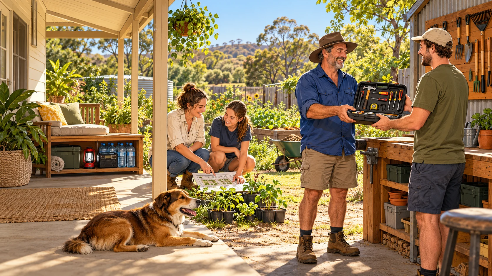
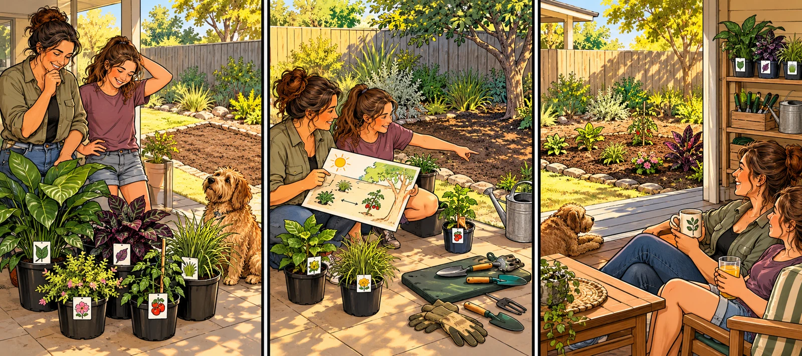

Less mucking about. More living.
190 familiar bad habits and useful ways forward, from the bathroom to the back paddock.
Life hacks in reverse. A better way in reach.
A working bank for the men’s, women’s and young-crew editions. Each pair turns a familiar habit into a response someone can try, with help where needed. Swap the cast to suit the story. The aim is more health, trust, capability and time to enjoy life together.
Find a habit to turn around
190 ideas across 17 areas. Each pairs a familiar bad habit with a useful response. Try the scenes with readers and see whether the change is clear and worth making.
190 of 190 ideas
Jump to one of the 17 areas
Bad habitBetter way
Personal hygiene and looking after your body
Bad habitUsing deodorant to extend the working life of dirty clothes
Better waywash yourself and wear clean clothes.
Bad habitBrushing your teeth only when someone important might smell them
Better waymake dental care an everyday routine.
Bad habitLeaving the wet towel in a floor heap, then complaining it smells
Better wayhang it to dry and wash it regularly.
Bad habitLeaving beard trimmings, hair or makeup residue as a bathroom signature
Better wayclean up after yourself.
Bad habitEmptying the toilet roll without appointing a successor
Better wayreplace it before leaving.
Bad habitTreating handwashing as an optional finishing touch
Better waywash at the relevant times, including before preparing food.
Bad habitSharing personal care items because ownership seems complicated
Better waykeep personal items separate and care for them properly.
Bad habitWearing yesterday’s sweaty sports gear because it has dried
Better waywash it and prepare clean gear.
Bad habitIgnoring a persistent health concern because mentioning it would make it official
Better wayseek suitable professional advice.
Bad habitMocking someone for taking care of themselves
Better waysupport the habit and consider what you could learn.
Useful guidance: Healthdirect: dental care and teeth cleaning
Food, cooking and eating
Bad habitShopping for the organised person you imagine becoming
Better wayplan meals you can realistically prepare and enjoy.
Bad habitBuying a fourth sauce bottle because checking the cupboard takes effort
Better waycheck supplies before shopping.
Bad habitStarting dinner before discovering what the recipe requires
Better wayread the method and organise the ingredients and equipment.
Bad habitKeeping a fridge full of unidentified historic events
Better waylabel stored food and follow storage and use instructions.
Bad habitTreating a sniff as a complete food-safety assessment
Better wayuse proper storage guidance and date information.
Bad habitEating straight from a shared container, then returning it for everyone
Better wayserve your portion using clean utensils.
Bad habitReturning empty packets to the cupboard
Better waydispose of them and update the shopping list.
Bad habitCalling a bench full of cooking mess “the chef’s privilege”
Better wayinclude cleaning in the cooking job.
Bad habitBuying takeaway because the groceries require too much imagination
Better waykeep a few achievable meals in your repertoire.
Bad habitCriticising every meal while contributing only appetite
Better wayhelp plan, prepare, serve or clean up.
Useful guidance: Eat for Health: meal planning · Queensland Health: recognising potentially unsafe food
Laundry, possessions and domestic organisation
Bad habitPromoting a chair to permanent clothes storage
Better waysort washing from clothes ready to put away.
Bad habitLeaving laundry in the machine until the next person excavates it
Better wayfinish washing, drying and putting away.
Bad habitKeeping clean and dirty clothes in one democratic heap
Better waygive them separate, usable places.
Bad habitStarting every departure with a search for keys, glasses and phone
Better waygive essentials a consistent home.
Bad habitBuying storage containers instead of deciding what to keep
Better waysort possessions before buying more storage.
Bad habitBringing home another “easy restoration” while six projects block the garage
Better wayassess the work, space and actual use first.
Bad habitKeeping broken things indefinitely because they might become useful
Better wayrepair, pass on or dispose of them deliberately.
Bad habitPutting something somewhere “safe” that changes every time
Better wayuse a place you can remember and retrieve it from.
Bad habitUsing the last shared supply and developing selective blindness
Better wayrefill it, replace it or tell the household.
Bad habitKeeping everyone’s belongings mixed together, then blaming them for losing things
Better wayagree accessible places and respect them.
Time, attention and getting things finished
Bad habitSnoozing every reminder until it becomes background music
Better wayact on it or deliberately reschedule it.
Bad habitSaving an appointment screenshot and expecting destiny to remind you
Better wayput the commitment in a usable calendar.
Bad habitPlanning an arrival time without allowing for getting ready or travelling
Better wayplan the whole departure.
Bad habitSaying yes to commitments that cannot all fit
Better waygive an honest answer before others depend on it.
Bad habitStarting another project whenever the current one becomes unglamorous
Better wayfinish, pause or retire projects deliberately.
Bad habitWatching tutorials instead of practising
Better wayuse suitable instruction and actually try the skill.
Bad habitRewriting the to-do list as a substitute for doing it
Better waychoose a real task and work through it.
Bad habitChecking every notification while complaining about interruptions
Better waychoose when to check messages.
Bad habitCalling something “nearly finished” while everyone waits for the usable result
Better wayagree what finished means.
Bad habitTreating asking for help as proof of incompetence
Better wayask a useful question and learn the part you do not know.
Money, buying and borrowing
Bad habitBuying something because it is discounted rather than wanted
Better waycheck the need, total cost and budget.
Bad habitAvoiding the bank balance so the money can enjoy its privacy
Better wayreview spending and upcoming commitments.
Bad habitCollecting subscriptions you no longer remember joining
Better wayreview recurring charges and cancel unused services.
Bad habitTreating several instalment purchases as several tiny prices
Better wayconsider all repayments together.
Bad habitBuying duplicates because finding the original seems harder
Better waycheck what you own first.
Bad habitBorrowing on terms that become conveniently vague
Better wayagree the terms and keep your promise.
Bad habitLending money you need for your own commitments to avoid an awkward conversation
Better wayset an honest boundary.
Bad habitHiding purchases from someone who shares the financial consequences
Better waydiscuss the shared budget and decisions.
Bad habitKeeping receipts in six vehicles and three washing machines
Better waykeep purchase records somewhere retrievable.
Bad habitSpending to look successful while neglecting things you actually value
Better waydecide what you want your money to make possible.
Useful guidance: ASIC MoneySmart: buy now pay later services
Sleep, energy, exercise and recreation
Bad habitTreating bedtime as the beginning of tomorrow’s scrolling
Better waymake room for a workable wind-down and sleep routine.
Bad habitGiving everyone nearby front-row access to your late-night videos
Better wayuse headphones and respect their rest.
Bad habitBuying exercise equipment for a person who never arrives
Better waychoose movement you can realistically enjoy and return to.
Bad habitCollecting workout videos while remaining seated through all of them
Better waychoose an appropriate activity and participate.
Bad habitTurning every friendly game into a personal selection trial
Better wayagree the spirit of the game and include everyone’s enjoyment.
Bad habitCopying someone else’s training without understanding it
Better wayget suitable guidance for your ability and circumstances.
Bad habitTreating pain or exhaustion as a competition
Better waypause and seek appropriate advice.
Bad habitScheduling every spare moment until leisure becomes another shift
Better wayprotect time for rest and unstructured enjoyment.
Bad habitMaking every social gathering depend on drinking
Better wayinclude enjoyable options that do not depend on alcohol.
Bad habitAbandoning an activity because you were not immediately impressive
Better waypractise with support and notice what improves.
Useful guidance: Healthdirect: sleep
Conversation, frustration and conflict
Bad habitPreparing your next story while somebody else speaks
Better waylisten and ask a relevant follow-up.
Bad habitTurning every conversation into a comparison you must win
Better waylet another person’s experience stand on its own.
Bad habitGiving instructions when a friend wanted someone to listen
Better wayask what kind of support would help.
Bad habitDelivering an apology with a fully loaded “but”
Better wayname your action, acknowledge its effect and make amends.
Bad habitSaving unrelated complaints for the next argument
Better waydiscuss one specific issue at a suitable time.
Bad habitSending the furious message while your thumbs are still at full throttle
Better waypause and rewrite the actual concern or request.
Bad habitTreating a changed opinion as a public defeat
Better wayacknowledge new information and update your view.
Bad habitUsing “I’m just honest” to excuse unnecessary cruelty
Better waybe truthful with care and a useful purpose.
Bad habitTaking a bad day out on everyone within reach
Better wayexplain that you are struggling and ask for space or help.
Bad habitContinuing the joke after its target stops laughing
Better waystop, listen and repair the interaction.
Adult dating, affection and partnership
Bad habitTreating a date as an audition for your autobiography
Better wayshow curiosity and make room for their story.
Bad habitNegotiating a declined invitation like a used-car purchase
Better wayaccept the answer without pressure.
Bad habitAssuming affection gives permission for whatever comes next
Better waycheck that the other person wants the same thing.
Bad habitExpecting a partner to read clues instead of hearing a request
Better waysay what you need clearly and respectfully.
Bad habitCalling jealousy proof of love
Better waydiscuss boundaries without monitoring or controlling the other person.
Bad habitKeeping a secret scoreboard of every favour
Better waytalk about whether the arrangement feels fair.
Bad habitAnnouncing “I would have helped if you’d asked” after watching the job happen
Better wayagree responsibilities and own your share.
Bad habitLeaving one person to organise every enjoyable occasion
Better waycontribute ideas, preparation and follow-through.
Bad habitMaking jokes about your partner’s private vulnerabilities in public
Better wayprotect their dignity and keep private matters private.
Bad habitExpecting romance to survive on whatever attention is left over
Better wayagree time to enjoy each other’s company.
Parenting and the example adults set
Bad habitShouting “stop shouting” from the opposite end of the house
Better waymove closer and model the voice you want.
Bad habitDemanding apologies while refusing to give them
Better waydemonstrate acknowledging mistakes and repairing harm.
Bad habitCalling every question backchat
Better wayhear the question before deciding how to respond.
Bad habitDoing every manageable task for a child, then calling them incapable
Better waydemonstrate, practise together and hand over responsibility.
Bad habitExpecting children to know household skills nobody taught them
Better wayshow the steps and allow supported practice.
Bad habitPromising family time while remaining absorbed in your phone
Better wayprotect a period of available attention.
Bad habitComparing siblings as a motivational strategy
Better wayrecognise individual effort, needs and progress.
Bad habitTelling children to respect others while mocking strangers yourself
Better waymodel the behaviour in ordinary situations.
Bad habitMaking a child responsible for keeping the adults emotionally settled
Better wayseek adult support and let the child be a child.
Bad habitPassing down “that’s how I was raised” without examining the result
Better waykeep what helps and learn another way where needed.
High-school life, friendships and growing independence
Bad habitCopying an answer to conceal not understanding
Better wayask for an explanation and practise the difficult part.
Bad habitSaving assignment reminders without opening the assignment
Better wayread the task and clarify what it requires.
Bad habitPacking yesterday’s bag for today’s timetable
Better waycheck what the coming day needs.
Bad habitLeaving lunch containers sealed until they become biology projects
Better wayunpack, wash and prepare them for reuse.
Bad habitLaughing along with a pile-on to avoid standing out
Better waystop contributing and support the person being targeted.
Bad habitCalling harm “only a joke”
Better wayacknowledge the effect and help put things right.
Bad habitAccepting a dangerous dare to protect your reputation
Better wayuse a refusal you can say and leave with support.
Bad habitTreating somebody’s possessions or family circumstances as their rank
Better wayjudge how people treat others.
Bad habitRepeating an adult’s hostile behaviour because it looks powerful
Better waypractise a response that protects your dignity and other people’s.
Bad habitAssuming one failed attempt proves you are useless
Better wayget feedback and try again with appropriate help.
Phones, gaming and online behaviour
Bad habitPosting the group photo because you look excellent
Better waycheck whether the other people are comfortable with sharing it.
Bad habitForwarding screenshots before remembering they contain someone else’s business
Better waycheck permission and protect private information.
Bad habitSharing a headline without opening the story
Better waycheck the source and what the evidence actually says.
Bad habitLeaving incorrect information online because correcting yourself feels embarrassing
Better waymake the correction clearly.
Bad habitGiving your phone the best seat at every meal
Better wayagree when to put it aside.
Bad habitStaying in an online argument until everyone else falls asleep
Better wayask whether anything useful remains and step away.
Bad habitCalling abuse “gaming banter”
Better waykeep competition enjoyable without targeting people.
Bad habitSharing passwords as proof of friendship or affection
Better waykeep accounts secure and respect each other’s privacy.
Bad habitBuying game extras without checking the real-money total
Better wayunderstand the cost and agree spending limits.
Bad habitRecording the entire outing while barely joining it
Better waytake some agreed photos, then participate.
Useful guidance: eSafety Commissioner: sharing photos and personal information
Worksites, workshops and earning trust
Bad habitSigning task paperwork as though autographing a fan’s shirt
Better wayread it, check it fits the job and ask about uncertainty.
Bad habitTreating a new starter’s question as an interruption
Better wayexplain, demonstrate appropriately and check understanding.
Bad habitHiding damaged equipment so the next person gets the surprise
Better wayreport it and follow the workplace process.
Bad habitReporting hazards into a bottomless suggestion box
Better wayacknowledge reports, act and tell the crew what happened.
Bad habitBlaming attitude when the job lacks time, equipment or clear instructions
Better wayfix the conditions needed to do the work properly.
Bad habitCalling gear in a walkway “temporary” for three months
Better wayprovide suitable storage and keep access clear.
Bad habitReturning a borrowed tool without its accessories
Better waycheck and return the complete kit as agreed.
Bad habitDeclaring the job finished while leaving the mess as somebody else’s inheritance
Better wayinclude clearing, storage and handover.
Bad habitPretending to understand an unfamiliar task to avoid looking new
Better wayask before proceeding.
Bad habitMaking speed the only achievement anyone notices
Better wayrecognise careful work, useful reporting and helping others learn.
Useful guidance: WorkSafe Queensland: reporting safety
FIFO camps, travel and the outdoors
Bad habitConducting a full-volume conversation outside sleeping quarters
Better waymove the conversation away from people resting.
Bad habitTreating camp laundry machines as personal storage lockers
Better waycollect your washing promptly.
Bad habitAssuming off-shift means available for your entertainment
Better wayask whether someone has time and accept their answer.
Bad habitPacking for six imaginary holidays while forgetting this trip’s essentials
Better wayprepare for the actual plans and conditions.
Bad habitTreating the fuel gauge as a test of optimism
Better wayplan suitable stops before departure.
Bad habitAssuming phone reception follows you into the scrub
Better waycheck the trip’s communication and navigation arrangements.
Bad habitChanging a remote-trip plan while your contact follows the old one
Better waycommunicate relevant changes.
Bad habitLeaving a property gate however it happens to land
Better wayfollow the property’s instructions and check it is secure.
Bad habitBringing a dog and announcing that everybody loves dogs
Better waycheck access rules, care arrangements and other people’s comfort.
Bad habitLeaving rubbish beside a full bin as an act of faith
Better wayuse suitable disposal or carry it out.
Friends, neighbours, clubs and enjoying life together
Bad habitComplaining that the club is dying while the same three people run it
Better waytake on a useful job you can reliably complete.
Bad habitVolunteering everyone else for the working bee
Better wayask them and commit your own contribution.
Bad habitArriving at the shared picnic with a chair and an appetite
Better wayagree what to bring or how to help.
Bad habitSaying “probably” to an invitation while waiting for a better offer
Better waygive an honest answer and update the host.
Bad habitReturning borrowed gear with a mystery fault and no explanation
Better wayreport what happened and help resolve it.
Bad habitGreeting newcomers with a test of whether they belong
Better wayintroduce yourself and explain how to join in.
Bad habitTreating shared venues as places with invisible cleaning staff
Better wayleave them ready for the next group.
Bad habitCoaching children from the sideline as though national selectors are listening
Better wayencourage effort and let them play.
Bad habitOffering a running commentary while others do the work
Better wayask what help is useful and take part.
Bad habitWaiting for somebody else to organise all the fun
Better wayinvite people into something achievable and share the preparation.
Gardening
Grow a garden that fits the place, the people and the time you have. The joke can turn an impulse purchase or a neglected corner into a space somebody actually enjoys.


Bad habitBuying plants because they look good beside the nursery checkout
Better waychoose plants suited to your space, conditions and care capacity.
Bad habitPutting a sun-loving plant wherever the spare pot happens to fit
Better waycheck the plant’s light and space needs before choosing its home.
Bad habitPlanting for the weather you would prefer to have
Better wayuse suitable local seasonal guidance and the conditions you actually have.
Bad habitWatering everything on autopilot, including yesterday’s puddle
Better waycheck the plants, soil and weather and follow local water guidance.
Bad habitGiving a struggling plant extra fertiliser before finding out what is wrong
Better waycheck its growing conditions and seek suitable advice before adding products.
Bad habitTreating fertiliser directions as a conservative opening bid
Better wayuse products only as labelled and store them appropriately.
Bad habitLeaving tools in the garden until the mower discovers them
Better wayclean, check and store tools after use.
Bad habitKeeping a hose across the path because the garden is nearly finished
Better wayput it away so people can use the path.
Bad habitBuying seeds for a market garden while owning two usable pots
Better wayplan a growing space you can maintain and enjoy.
Bad habitForgetting what you planted, then asking every green shoot for identification
Better waylabel plants and keep useful growing notes.
Bad habitLetting weeds set up headquarters while waiting for a heroic cleanup day
Better wayidentify them and use a suitable local control approach before they spread.
Bad habitThrowing everything into the compost and expecting gardening magic
Better wayfollow suitable compost guidance and keep unsuitable material out.
Bad habitPlanting first and checking the mature size when it reaches the gutter
Better wayallow for the plant’s eventual size and nearby structures.
Bad habitDigging as though underground services are somebody else’s plot twist
Better waycheck the location and requirements for services before ground disturbance.
Bad habitChoosing unfamiliar plants without considering children or pets
Better waycheck suitability with reliable local guidance before bringing them home.
Bad habitUsing a spray because the bottle has a picture of something green
Better wayidentify the problem and follow the correct product label and conditions.
Bad habitPruning somebody else’s garden according to your personal artistic vision
Better wayask the owner and learn the suitable method before cutting.
Bad habitPlanting edibles without checking the growing site or materials
Better waycheck that the site, containers and materials are suitable for food growing.
Bad habitTaking the community garden’s harvest while missing every working bee
Better wayagree how produce and work are shared and contribute accordingly.
Bad habitTurning gardening into a competition over whose lawn fears them most
Better waychoose a useful, manageable garden and make time to enjoy it.
Useful guidance: Queensland Government: waterwise gardening · Before You Dig Australia: plan before ground disturbance
Prepping and emergency preparedness
Prepare for the hazards relevant to where you live. A shared household plan, useful supplies and neighbour connections can make being ready part of ordinary life. Use current official guidance for your location and household needs.
Bad habitBuying a dramatic survival gadget before learning the local hazards
Better waycheck official local advice and prepare for the emergencies relevant to your area.
Bad habitKeeping the household emergency plan entirely inside one person’s head
Better waymake a shared plan that everyone can understand and access.
Bad habitTreating last year’s emergency kit as a sealed time capsule
Better waycheck the contents, condition and dates and replace what is needed.
Bad habitBuying supplies for an imaginary siege while everyday essentials run out
Better wayuse an official household kit checklist and plan around actual needs.
Bad habitKeeping the torch in one drawer and its batteries in a mystery location
Better waystore suitable working lighting and its power supply where they can be found.
Bad habitSaving important phone numbers only on the phone that may be unavailable
Better waykeep accessible backup contact details as part of the household plan.
Bad habitWaiting for a rumour in the group chat to become the warning system
Better wayknow the official warning channels for your location and follow current advice.
Bad habitAssuming everybody will find each other without discussing it
Better wayagree contact arrangements and meeting options suited to the household.
Bad habitMaking a plan that only works for the fastest person in the house
Better wayinclude mobility, communication, medical and other support needs.
Bad habitRemembering the pets when the car is already packed
Better wayinclude animals, their care needs and transport arrangements in the plan.
Bad habitStoring emergency supplies behind furniture nobody can move
Better waykeep them secure, accessible and known to the people who may need them.
Bad habitRelying on a single charged device as the entire communications department
Better wayplan suitable backup power and ways to receive official information.
Bad habitPacking food that nobody in the household can eat
Better wayinclude suitable dietary needs and items the household can actually use.
Bad habitBuying emergency food once and rediscovering it a decade later
Better waycheck dates and rotate supplies through ordinary use as appropriate.
Bad habitLeaving essential documents scattered across the house
Better waykeep suitable protected copies accessible as part of the plan.
Bad habitAssuming a neighbour will organise your transport without being asked
Better waydiscuss support and transport arrangements before they are needed.
Bad habitPlanning to improvise unfamiliar equipment during an outage
Better waylearn its correct use beforehand and follow the manufacturer’s safety instructions.
Bad habitKeeping old contacts and last year’s household arrangements in the emergency plan
Better wayreview it when people, contact details, needs or living arrangements change.
Bad habitPutting on a brave face while having no idea what the warning means
Better wayask, learn the local warning system and follow the relevant official instructions.
Bad habitTreating being prepared as a reason to distrust everybody nearby
Better waybuild practical neighbour connections and discuss how to help each other.
Useful guidance: Get Ready Queensland: make a plan · Get Ready Queensland: pack a kit · Get Ready Queensland: pets and animals
No matching ideas. Try another word or choose all areas.
Give an idea a picture
Choose a habit, show the person trying a useful response and give the result room in the picture. Help, suitable equipment and better conditions can be part of the change. Ask readers what they understood and what they would actually try.